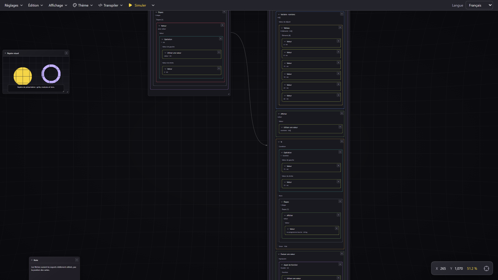

Application desktop Windows, Linux et macOS · 0.1.0-beta.7
Windows vérifié ; paquets Linux et macOS construits mais non testés à l'exécution. Le texte décrit le code courant, qui peut être plus récent que la release publiée.
Des blocs qui sont de vrai code, pas des dessins qui y ressemblent
Sapphire 3 est un environnement de programmation visuelle. Chaque carte posée sur le canvas est une construction du langage : une fonction, une variable typée, une boucle, un appel. Elles forment un arbre syntaxique indépendant du langage cible, qu'un moteur analyse, type et vérifie avant toute génération. Le texte n'a jamais été supprimé : il a seulement cessé d'être le point de départ.
- React 19
- Vite 8
- JavaScript / JSX
- CSS natif
- Neutralinojs
- pnpm
- AST indépendant des cibles
- Typage statique strict

État du projet
Sans emphaseCe qui fonctionne aujourd'hui
Canvas navigable, zoom sémantique et cartes Module, Class, notes et images. Les classes proposent
des membres public/private, un constructeur, des instances avec new, this
et des types de classe. Pas d'héritage ni de polymorphisme ; les classes ne sont pas encore transpilées.
Le langage couvre les fonctions et
types déclarés à la racine d'un module, conditions, boucles, ForEach, affectations, appels,
tableaux, typage statique strict, références de fonction, pointeurs avec adresse, déréférencement et
écriture, génériques avancés (plusieurs paramètres T, U, tableaux génériques
et contraintes exactes), lambdas et fermetures avec retours de type fonction, opérations natives SP3
(maths, texte et tableaux), formules KaTeX dans les notes et références intermodules avec flèches
courbes. La simulation, le debug et la transpilation JavaScript/Python s'exécutent hors du fil React,
avec progression et annulation ; le debug ajoute points d'arrêt, mémoire abstraite et valeurs au survol.
Run propose une simulation graphique simplifiée. L'interface offre aussi les graphes de contrôle et de dépendances, les
cartes Screen/Gauge/ProgressBar/BarChart/LED avec lecture synchronisée à 24 fps, les grilles Heatmap
fixes suivies par pas sans horloge de lecture, les contrats vérifiables, le gestionnaire de fenêtres, le constructeur
de signatures de fonction, les thèmes prédéfinis et personnalisés, huit langues, l'import/export
.sp3/JSON, l'autosauvegarde, la récupération des documents neufs, trois sauvegardes de
secours et un workspace version 3 : dossier choisi, workspace.sp3, images liées et export ZIP,
avec migration des versions 1 et 2. Le mode exercice ajoute un manifeste
dans le document : consignes, snapshot de départ, tests d'entrée ou de fonction exécutés par
Check, retour du robot, verrou d'édition par mot de passe haché (PBKDF2) et enregistrement d'une
solution ZIP lorsque tous les tests passent. Les thèmes ont une apparence sombre et claire commune.
Une Discord Rich Presence optionnelle, via un sidecar local sans compte ni token, affiche
l'activité courante, un chronomètre et deux boutons GitHub ; seuls des compteurs génériques sont publiés.
Ce qui ne l'est pas encore
Aucun lancement de simulation sans action explicite ; seule la lecture d'une séquence d'écran sans
cycle peut relancer la simulation pour renouveler ses images. Les cibles C/C++/Java sont présentes mais
désactivées. Le modèle objet n'est pas décidé. Les lambdas ont un corps expression unique et ne sont pas
génériques ; leurs paramètres ne sont pas adressés par &. Les sauvegardes de secours
ne tournent que lors d'un enregistrement direct. Les mutations structurelles du document gardent une
analyse synchrone, même si les calculs lourds explicites passent par un Web Worker. Le rendu de monnaie
des exemples est glouton pour un jeu canonique, et l'exemple de calcul utilise une intégrale numérique de
Simpson. Le mode exercice ne verrouille que l'interface : les tests restent lisibles et modifiables
dans le JSON, et le mot de passe ne chiffre pas le fichier.
Un document, pas une maquette
Les captures de ce site proviennent de l'application réelle, pilotée par ses propres dialogues, sans montage. Le projet illustré a été construit bloc par bloc dans l'interface, puis simulé.
- Deux cartes Module : Calculs publie une fonction, Affichage l'importe et l'appelle. Une carte porte la hiérarchie des blocs, l'autre ses propres étapes.
- La flèche courbe va du module exportateur vers le module récepteur. Elle n'apparaît que si une exportation est réellement utilisée : déplacer une carte ne crée ni ne supprime aucune dépendance.
- Le statut en bas à gauche rappelle la zoom courant et l'état d'analyse du document : nombre de modules, de nœuds et de diagnostics.
Dashboards exportés
10 exemples réelsDix fichiers HTML autonomes, interactifs, générés depuis les exemples locaux, avec des entrées aléatoires pour varier en Run autonomous : widgets, classes, modules, thèmes clair/sombre et huit langues. Les cadres ci-dessous exécutent le vrai moteur ; rien ne démarre avant un clic.
Comment le projet est conduit
Le développement avance par incréments volontairement petits : une capacité visuelle, puis son modèle de données, puis son moteur, puis ses validations. Une direction de conception n'est jamais implémentée sans être demandée, et une fonctionnalité n'est annoncée que si elle est réellement opérationnelle dans la fenêtre de l'application.
Le code est écrit avec des assistants. Sapphire 3 est un projet conduit en dialogue avec des outils d'assistance au développement (OpenCode, DeepSeek V3.2, ChatGPT Sol 6.1, GLM 3.2, Nemotron de NVIDIA) : c'est un mode de fabrication assumé, pas un détail caché. Ce qui l'encadre : chaque incrément est relu, testé (suite Node et Python, runner Node natif, sans dépendance de test) et validé dans l'interface avant d'être retenu ; la CI GitHub Actions rejoue tests et build sur chaque pull request. Le vocabulaire, les contrats et les limites sont décidés par le projet, pas par le générateur.
Cette documentation évolue avec le projet. Elle décrit l'état atteint, pas un plan. Les pages sont produites en même temps que les fonctionnalités : une capacité ajoutée ailleurs se traduit ici par une nouvelle section ou sous-section, parfois sans nouvelle capture, et une capacité non encore livrée y est explicitement marquée comme absente.
Technologies
| Rôle | Choix | Remarque |
|---|---|---|
| Interface | React 19.3.1, composants fonctionnels JSX | Canvas plein écran, panneaux flottants déplacables, aucune bibliothèque d'interface tierce |
| Build | Vite 8.3.5 | Serveur de développement local, compilation du frontend pour la distribution |
| Desktop | Neutralinojs 6.10.0 (neu 11.8.0) | Fenêtre native, dialogues de fichiers, accès disque ; aucun backend, aucun service distant à l'exécution |
| Style | CSS natif + jetons dans src/styles/tokens.css | Sept palettes prédéfinies et thèmes personnalisés, variables sémantiques, pas de charge distant de police ou de feuille de style |
| Icônes | lucide-react ^1.64.0 | Utilisés comme glyphes décoratifs, toujours accompagnés d'un libellé ou d'aria-label |
| Moteur logique | JavaScript pur dans src/utils/logic/ | Sans React, sans DOM, sans API native ; source JSON versionnée, importable et testable seul |
| Tests | node --test | Scénarios Node et Python : valides, invalides, incomplets, classes, localisations, non-mutation, conservation JSON, migrations, sauvegardes, widgets graphiques, exercices et verrou PBKDF2, notifications par mascotte, aimantation des modules et vitesse de simulation |
| Documentation AST | LaTeX → PDF | abstract/ARCHITECTURE_AST.tex et son PDF, compilés par pnpm docs:ast |
Dépôt du projet : github.com/lalBi94/Sapphire3 — sources, historique et issues de Sapphire 3. Le présent site n'est qu'un support de présentation : il ne contient aucun code de l'application et n'en est pas une copie fonctionnelle.
Quatre lectures possibles
Documentation visuelle
Vingt sections, quarante-deux captures réelles annotées : créer un module, construire une expression, déclarer un export, importer une fonction, lire une flèche de dépendance, simuler, déboguer pas à pas, transpiler, changer de thème et de langue. Les fonctionnalités récentes — généricité avancée, lambdas et fermetures, zoom sémantique, sauvegardes et migration du workspace — sont décrites dans le texte ; les captures datent de la campagne précédente.
Le modèle AST
Ce que le moteur stocke vraiment : la source JSON v1, les trois relations indépendantes, les vingt-huit constructions et leurs slots, le typage strict, les portées, les diagnostics, puis la route vers l'analyse, la simulation et la transpilation.
Dashboards exportés
Dix fichiers HTML autonomes et interactifs : widgets, Run/Pause/Stop, Run autonomous, thèmes et langues. Chaque exemple est régénéré après les changements du dashboard.
Architecture AST (PDF)
Le document de référence, rédigé en LaTeX : objectif et périmètre, concepts et relations, flux et responsabilités, structures et invariants, un exemple à deux modules, validations et limites connues.